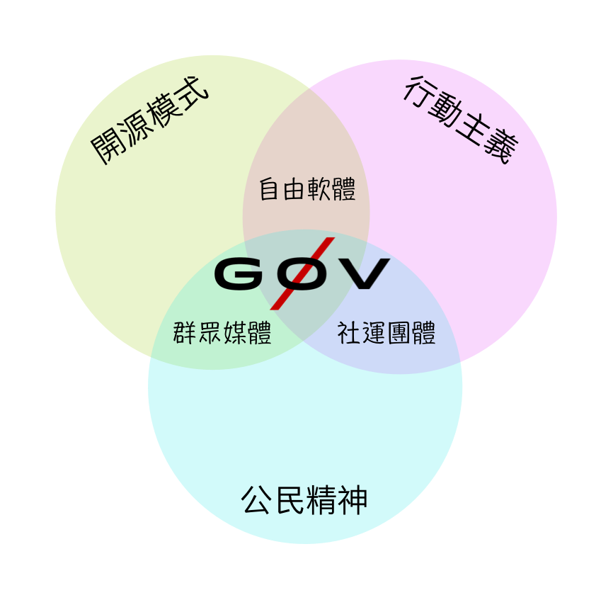

第0回ヒマワリデジタルキャンプ(書き起こし)
…そして(g0vの)一年目はこちら。
今年(2014年)の3月8日、我々は原発新設に反対するパレードの支援に呼ばれていた。

その1年ほど前、同じ場所で同じ目的の大規模なパレードが行われた。 主催者はHiNetの広帯域回線を用意していたにもかかわらず、適切な技術サポートを得られていなかった。 そのため回線は過負荷となり、参加者は誰もネットを使うことができなかった。 メディアはリアルタイムにレポートを発表することができず、レポーターや出版社からは不評を買うこととなった。
今回、主催者は我々g0vに支援を求めた。 我々は所有する家庭用AP(アクセスポイント)を提供し、確実に接続できるよう設定を行った。 同時に、無線につながらず利用できなくなる事態を避けるため、USBで有線接続できるイーサネットドングルを20個提供した。 こうした準備にもかかわらず、荒れ模様の天候のため、10人足らずのメディア関係者しか現れず、 50Mbitほどの帯域が余る換算となった。この帯域は何に使うべきだろうか？
1万人の参加者にネットへのアクセスを提供することも検討したが、我々の家庭用のAPでは充分ではなく、すぐに過負荷になってしまうことが予想された。 代わりに、その帯域はステージの画像と音声をYouTube Liveで高画質配信するために使うことにした。
事前には配信の告知をしていなかったにもかかわらず、ステージの前にいる人々よりももっと多くの人々がこの配信を観てくれていた。これは現地での運動に「遠隔参加」できることを示すこととなった。
このイベント以来、今後のイベントに私たちの技術を役立てるにはどのような改良をしていけばよいか、その方法を議論してきた。そしてその成果をOSDCで発表するつもりだった。 しかし、それとは違う発表をすることになった、その経緯を簡単に紹介したい…
このベン図を見て欲しい。3月18日、立法院の近くで別のパレードが行われていた。 台湾当局は、いかなる国に対しても、外国との貿易協定は外交的な事案であると考えている。 しかしながら、これは中国に対しては当てはまらない。 なぜなら、憲法の規定によれば、中国は台湾の一部分であり、「外国」ではないためである（同時に、中国の憲法の規定によれば、中国は台湾が中国の一部分であると考えている。我々はそれに同意する…わけではないと思っている）。
憲法上、両岸(台中)関係には多くのあいまいな部分が存在しており、 そのため中国との海外貿易協定を立法院が監督する合法的な手段は存在しなかった。 その日、立法院は貿易協定を強制的に通過させてしまったため、 多くの人びとが憂慮した。 もし立法院が監督を放棄してしまえば、 行政当局は中国とどんな協定でも同様のプロセスで締結することができてしまうためである。
その夜、非常に大規模な抗議行動が行われた。 私はその活動の中継を支援することに決めた。 ところが、WiMaxデバイスとビデオキャプチャーカードを持って到着したときには、 私より専門的な人がすでにそこにいた。 彼はビデオカードつきのデスクトップコンピュータと配信ソフトウェアを持ち込んでおり、 自身のことをIndieTaiwan(音地大帝)と名乗っていた。
しかし、彼はYouTube Hangoutをセットアップしたり、デスクトップコンピュータを無線ネットワークにつなげる方法については疎かった。 全てのカメラと音声回線は接続済みだったが、信号が送信されていなかった。 そして彼の携帯による3G回線はとてもひどい品質だった。
そこで私は、高速なHSDPA+接続が可能な自分の携帯を提供した。 しかし、Indieのデスクトップ機ではUSB Wifiに接続できなかった。 インターネットも、配信設備もあるにもかかわらず、その2つをつなげることができなかったのだ。
その時、若い学生が現れ、こう言った。「あの、私のノートPCを貸しますので使ってください。これはAdministratorアカウントです」（確かWindows XPだったと記憶している。） 「今夜はもう使わない予定なので。」
その時はまだ、彼がその晩、なぜノートPCを使わないつもりだったのか、知らなかった。
「貸しますので好きに使ってください。デスクトップが汚くてすみません。」（黒色島国青年陣線の）学生はそう言っていた。
（訳注:「黒色島国青年陣線(The Black Island Nation Youth Front)」は2013年9月に結成された、学生による社会運動グループ。立法院占拠を行った主要組織の1つ。）
このノートPCで、無線ネットワークを私の携帯につなげた。XPのインターネット共有機能を使って、Indieのデスクトップ機をイーサネットでつなぎ、 その夜の抗議活動のリアルタイム動画配信をただちに行った。

この時、私ははっきりと認識した。 この3つの集団、シビックメディア、フリーソフトウェア、そしてソーシャルアクティビズムが互いに近寄り、一点に集まると、とても興味深いことが起こると。
これから話すことは、立法院で起こったことではなく、中央研究院で起こったことである。これは、キャンプの当事者たちを保護するためである。
（訳注: この文書はOSDC.tw 2014（オープンソースデベロッパーカンファレンス in 台湾 2014）での発表を文書化したもので、中央研究院はOSDC.twの会場として使われていた場所です。訳者もあくまで著者の主張を尊重し、これは立法院占拠のこととは関係のない、中央研究院で行われた「第0回ヒマワリデジタルキャンプ(0sdc)」についての紹介であるというスタンスで訳出しています。台湾の政治情勢に馴染みのない日本の方には、素直に立法院占拠の話として訳出した方が読みやすいことは重々承知していますが、後述の通りOSDC.tw 2014は立法院占拠終了の翌日（！）から開催されたカンファレンスであり、また立法院占拠の最中でも馬英九総統（当時）は占拠は違法であると発言していたなど、発表当時はまだある種の緊張関係があったことも踏まえて読んでいただけるとありがたいです。）
第0回ヒマワリデジタルキャンプ(The 0th Sunflower Digital Camp、第零次向日葵電子体験営)は7階にいるKC Huang(黄国昌)とその他の人々により、3月19日に中央研究院で開催された。 会場は今OSDCで我々がいる建物（人文社会科学館）で、R0、R1とR2（会議室）の3箇所からなる。
（訳注: 立法院も中央研究院も知らない人には状況が全く分からないと思うので説明しますが、立法院にたとえると、R0は占拠中の立法院の会議場内、R1とR2は立法院周辺のデモ会場、ということになります。繰り返しますが、これはあくまでたとえです。）

IndieTaiwanはR1で、コンサートを外部に配信している。そしてR0内の、後ろから5列目の席に、サンダルで支えられたiPadがあり、内部で何が起きているかをストリーミングしていた。 g0vの友人数名がwebcamを何台かセットアップし、すべての動画配信フィードをHackfoldrに集約し、またHackpadに共同執筆していた。

何らかの理由により、人々はこのキャンプに大きな関心を寄せて、そのためHackpadは…（笑いと拍手）…我々を支えるためにサーバ増強に費用を費やした。翻訳班もその時に成立した。

始まった時点では、キャンプはまだヒマワリとは呼ばれてなかった。 3月19日の朝、R1にいた人々は、R0のためにMediaWikiを設置した。MediaWikiのデフォルトのロゴがヒマワリなことはよく知られている。それ以来、このキャンプはヒマワリキャンプと呼ばれるようになった（会場笑）
3月20日の主なタスクは、ロジスティクスとサプライの部隊を組織することだった。R0にいる多くの人々には弁当が必要であり、ベジタリアンの人もそうでない人もいた。 そこで我々はGoogleフォームとPTT(台湾でよく使われているBBS)上のピンづけされた記事を使った。 Googleフォームに食べたいものを記入するだけで、弁当が自動的に送られるようになった。たいへん便利だった。

3月20日には、g0vの友人たちがR2に行った。R2はR0に非常に近かったが、強力な指向性アンテナを設置し、WiMax -> Wifiの電波をiPadが置かれているR0に届くようにした。

3月21日には、2.4GHz帯と3Gがいっぱいになっていることが分かった。これは中央研究院のCisco APが強力すぎたためだった。 そのため…(笑)…我々はUSBのイーサネットジャックを20個ほど、R0キャンプのために導入した。
有線ネットワークがキャンプ全体に設置されるまで、WiMAXのポータブルホットスポットが広く使われた(WiMAXユーザは3Gユーザよりもずっと少なかったため)。 「Network」という名前のHackfoldrを用意し、Google Docsを使ってネットワークトポロジを更新するようにした。
3月22日、R0で誰かが負傷したという噂がR2から広まった。 何が起きたか確認しようとR0に突入を試みた。 しかし国際カンファレンスホール（訳注: R0のこと）への突入は非常に困難であったが、 コートを着た者が現れ、R0の人々は大丈夫だとR2に語った。
（総統の説明にあった「人々は機動隊に暴力的に追い出された」というのは、「人々は軽く肩にぶつかり、機動隊は群衆に対し離れるよう穏やかに告げた」であった。 コートを来た者は林飛帆(Lin Fei-fan)かと思われる。）

この問題のあと、我々は議論し、その結果、R0の画像を映し出すフィールドスクリーンをR2に設置すると、R0の外の人々も何が起きているのか把握できるのではないかということになった。 そこで、R0の外にプロジェクターが置かれ、R0からのテキストと動画による配信を映すようにした。
Hackpadでの翻訳班に加え、R0にいる人の中には、分速120（中国語）単語以上の早さで入力し、IRCチャンネルを使ったテキスト配信を続けている人がいた。 それ以降、オンラインでの配信を聞いている文字起こし班に加え、新しいテキスト配信チームが加わった。テキストは同時並行でライブビデオフィードの脇にあるスクリーンに表示された。
3月23日は萌典ソン(MoeDict Hackthon)があった。 以前に取得していたドメイン名 g0v.today を違う目的で使うことに決め、 英語への翻訳班も含めて、全てのダイレクトなストリーミング配信をそこに集めた。
同じ日に、 中央研究院の周辺を散歩することが合法になった(会場大笑)。そのため、ブロードバンドADSL回線をすぐに設置することができるようになった。
（台湾にはいかなる種類の抗議集会においても当局の許可があらかじめ必要になるという法律がある。 「中央研究院」での集会は許可を得ていなかったが、組織化されたものでもなく、事前に計画されたものでもなかった。裁判所の規則では、この種のフラッシュモブ的抗議行動は、自発的なものであれば合法であると判断された）

3月24日、残念なことに、中央研究院は停電した。キャンプの間でもっとも暗い一日だった。 キャンプの仲間が攻撃されただけでなく、EtherCalcやg0v.hackpad.comも攻撃された。 しかし、1時間ほどでサービスは復旧できた。
復旧後、WiMaxでは安定しないため、ADSL回線を調達することにした。 驚いたことに、Hinet ADSLは通常であれば3日から5日はかかるところ、翌日には使えるようになっていた。 おそらくHinetの人もストリーミングの復旧を期待していたのではないだろうか（笑）

350mのCAT–6 LANケーブルなどの配線を使い、R0とR2をつないだ。2つの部屋はこんなに近いのに、なぜかこんなにも長いケーブルが必要となった（拍手・大笑） (OSDCの会場である実際の中央研究院では、R0とR2は15mほどしか離れていない。しかし、抗議エリアでは、道路と建物の間は直線距離で100mほどあった) これで、R0とR1、R2が一つのLANでつながった。
もろもろの理由により、 PTTの村民3621人によるクラウドファンディングにより、大手新聞の広告枠を購入し、g0v.todayウェブサイトの宣伝を行った。 そのためサーバの容量が深刻な問題になった。 (PTTは台湾でよく知られているBBSで、約150万人のユーザがtelnet(!)インターフェースで使用している。PTTユーザは「村民（鄉民）」と呼ばれている。)

そのため、夜を徹してEtherCalcからGitHub Pagesにサイトを移行した。その結果、大量のトラフィックはGitHub PagesのCDNであるFastlyに流れ、負荷に耐えられるようになった。
(その当時、g0v.todayは約50万人ほどのユニークビジターがあった)

3月26日、我々は中央研究院をiPadで記録している人たちを守る、より良い方法を見つけた。 記者証を作り、g0vの仲間やその他の市民ジャーナリストの知り合いたちに配った。 そして中央研究院のテキストを出力したものを渡し、「メディア」の一部にならなくても、誰でも独立ジャーナリストになれるということを説明した。 それ以来、我々が独立メディアになった。

3月27日には、もう一つのWebサイト、123.g0v.todayを立ち上げた。これは自分の選挙区の国会議員の電話番号を調べるためのものである。 これは、議員に電話をし、両岸協議監督条例を成立させてから改めて再審議を促すとともに、キャンプに参加するよう訴えるためのものだった。 同じ日に、インターネットの海底ケーブルに技術的な問題が生じ、YouTubeからjustin.tvに切り替えないかという打診を先方から受けた。しかし、翌日にはケーブルが復旧したため、その親切なメールには未だ返事を出せていない…。

3月28日、工業技術研究院(ITRI)のチームが現れ、「中央研究院の廊下のように、死角になっている地点がまだある」と教えてくれた。そして、死角用に6台のカメラとビデオキャプチャ機材を追加で設置するのに協力してくれた。カメラ設置後は激しい衝突も暴力事件も一切起きなくなった。我々は大いに感謝し、より帯域を提供するようにした。
さらに、2階ほどの高さ(約5m)のスクリーンがR2に、その後R1にも設置された。これにより、R0に何が起こっているのかを等身大のスケールで見ることができるようになった。 ちなみに、R0のプロジェクターでは、映画Kanoが上映されていた(笑) いずれにしても、これで生中継が行われるようになった。

3月29日、別の集団が配信の協力を我々に依頼してきた。彼らはなぜか白い衣服を身に着けていた（会場笑）（注：彼らは「白色社会正義同盟」という団体で、抗議に反対する団体だったため）。 g0vはあくまで中立であるため、我々は配信のセットアップを協力し、支援を行った。 彼らは実際にはロジスティクス班のところに現れ、「これは我々の最初の活動であり、各種各様の問題が生じているので、協力できないか？」と相談してきた。 そこで、空のテンプレートに(3月8日に開催した)前回のハッカソンの経験を記載し、配信の方法について説明した。 聞いた所によると、彼らのその後の活動は改善されたそうだ…。
3月30日、別の大きなイベント(おおよそ50万人が参加した抗議集会)が行われた。 1年前、凱達格蘭（ケタガラン）大道での行われた25万人による集会（兵士の「殺害」事件に抗議する25万人ほどの人数が集まった抗議集会）に比べ、今回は大きなコンサート会場のように、400メートルごとに大きなスクリーンを設置した。

その大規模抗議集会の翌日である3月31日も、R0のキャンプは続いていたが、R1とR2の人は少なくなっていた。 そこで一計を案じ、キャンプの近くにいる通行人にインターネットアクセスを提供することにし、これを「通行人ソン」と名付けた。 これはなかなか複雑で、一人あたりの帯域を制限するために(NTU CSIEの大きな協力のもと)pfSenseを使用した。 インターネットアクセスを使えるようにすることで、より多くの人々がキャンプに参加することが狙いだった。

4月1日、8ヶ月にわたる開発の成果として、tisa.g0v.twという興味深いサイトが公開された。 これは両岸貿易協定案にどのような企業が影響を受けるかを調べることができるシンプルなWebサイトだった。
4月2日、R1での通行人ソンは終了した。 一方、国立台湾大学(National Taiwan University)の新聞研究所がたまたま我々の近くでキャンプを行っていた("NTU E Forum"は新聞研究所の学生によるグループで、Facebookに現地レポートを掲載している)。 そこで、我々がwebページでの配信と彼らのレポートを統合し、g0v-publicネットワークに接続している人であれば誰でも自動で表示できるようにした。

4月3日、誰か(おそらく「村長」ことclkao)がbillab.ioという別のサイトを立ち上げた。もともと、「国会大情勢」(http://ly.g0v.tw/)というサイトでは、現行の法令と新しい法令の草案が比較することができた。この新サイトでは、(両岸貿易協定の監査についての)まだ審議されていない法令についても比較できるようになり、大勢の人が「基本データ(quick facts)」を書く際にこのサイトを利用するようになった。

4月4日、同一LAN上で行われていたR2での通行人ソンも終了した。Loomioグループ(オンラインデモクラシープラットフォーム)が設置され、ネットワーク班の人々が何をするべきかの意志決定に使われた。
4月5日、手話クラブがキャンプに加わった(笑) … 彼らは「公民制憲会議」と名乗っていた。彼らの使う手話は「賛成」「分からない」「早く話せ」などだった。我々は、全ての記録を同時配信と書き起こしで保存した。

4月6日、もう一つのLoomioグループが、手話クラブの活動用に設置された。Loomioチームはこのオンラインデモクラシープラットフォームに新機能を追加するのにも活躍した。

4月7日、我々は日時を確認し、OSDCが4月11日に同じ場所で開催されることに気づいた。会場を彼らに返さなければならなくなった(会場笑と拍手)。OSDCに他の場所を使うようお願いするわけにもいかず、違う場所で開催した前例もなかった。そこで、みんな時間を確保し、会場内を清掃し、撤収した。
(実際には、王金平による譲歩の後、4月11日に予定されていた議会に合わせて、占拠の終了を4月10日に行うことが決定された)

これ以降、配信者のIndieTaiwanも仕事がなくなった。 そこで彼は正面玄関の前の群衆に向かい、大腸(詰め)のローストを売る老人たちに合流した(笑) これはカンファレンス会場内では食事ができなかったからである。 彼は外に出て大腸詰のローストを売ることになり、とてもよいビジネスになったそうだ(笑) 以上がキャンプの全てになる。
（注: 中国語の「ヒマワリ（太陽花）」と「大腸花」は字面が似ている。そのため、キャンプの追加セッションのことを「大腸花」と読んだ。 実際のところ、セッションは苦情（たまに賛辞）と罵倒の山だったが、若者には大変感謝された。 このイベントは二晩続き、そのまま配信された。 これが集団的精神療法の過程の一部となったという人もいた。）

キャンプの間、私にとって、また一緒に参加している友人たち(g0v)にとって、もっとも重要なことの一つは「ネットワーク中立性(Network Neutrality)」だった。
3月18日夜のコンサートの配信をサポートしていたとき、私はR1とR0の間の壁を乗り越えようとしていた人がいたことに気づかなかった。 しかし、中立なインターネットだけが、壁の中と外にいた人々をつなぐことができた。 コミュニケーションは衝突と誤解を減らすことができる。私の活動の原点はそこにあった。
もし、ほとんどの人が負傷することなく、そして誰一人として失うことなく済んだことに対して、我々の寄与がほんの1%でもあったなら、我々の活動は実行する価値のあったことだと思う（30秒ほどの長い拍手）。
この発表の最後に、ネットワーク班、文字起こし班と翻訳班、メディア班、ロジスティクス班、そしてすべての仲間たちに、最後まで透明性(Transparency)を放棄しなかったことに感謝を表したい。
(…ギークな人にはこのスライドが透明に見えるはず…(爆笑))

だから我々はオープン性と透明性の方針をあきらめずに済んだ。 このキャンプでの経験はこのようにまとめられ、広く共有しているが、いくつかの名前や場所は、巻き込まずに済むように曖昧にしている。 中央研究院の近くのもう一つの大きなキャンプを行いたい人々…(笑い)も、我々の文書を参照することを歓迎する。
ネットワーク中立性を長きにわたり推進している@nchildの言葉を引用したい。 「もしオープン性と透明性の力を信じることができれば、暗黒に打ち勝つことができるだろう」

ありがとうございました。
(拍手)